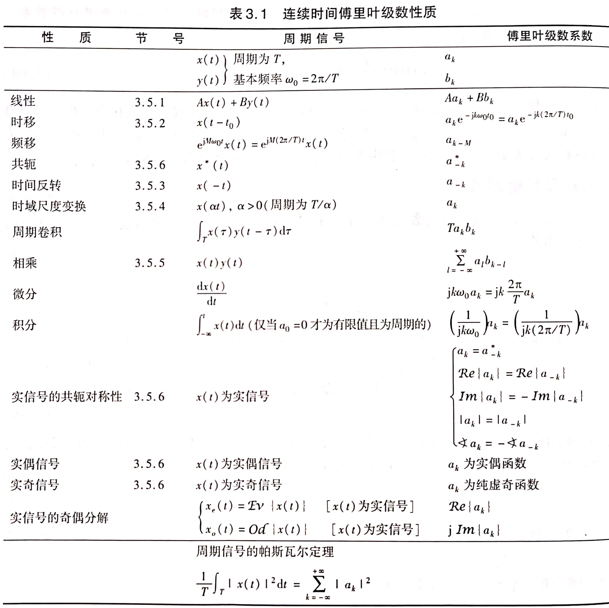
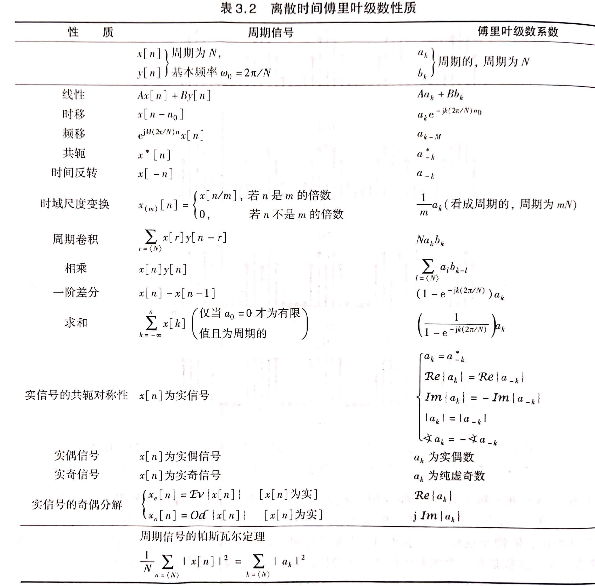

3.周期信号的傅里叶级数表示
* 3.1 历史回顾
3.2 LTI系统对复指数信号的响应
考察\(x(t)=e^{st},x[n]=z^n\)，由时域分析得：\(\begin{cases}y(t)=\int_{-\infty}^{\infty}e^{s(t-\tau)}h(\tau)d\tau=e^{st}\int_{-\infty}^{\infty}h(\tau)e^{-s\tau}d\tau=H(s)e^{st}\\y[n]=\sum_{k=-\infty}^{\infty}z^{n-k}h[k]=z^n\sum_{\infty}^{\infty}h[k]z^{-k}=H(z)z^n\end{cases}\)
可见LTI系统对复指数信号的响应容易求出
特征函数：如果系统对某一信号的响应是该信号乘以一个常数，则称该信号是这个系统的特征函数，系统对该信号加权的常数称为系统与特征函数相对应的特征值。
- 复指数函数\(e^{st}、z^n\)是一切LTI系统的特征函数，\(\begin{cases}H(s)=\int_{-\infty}^{\infty}h(t)e^{-st}dt\\H(z)=\sum_{-\infty}^{\infty}h[n]z^{-n}\end{cases}\)分别为LTI与复指数信号相对应的特征值
- 只有复指数函数才能称为一切LTI系统的特征
3.3 连续时间周期信号的傅里叶级数表示
3.3.1 连续时间傅里叶级数
成谐波关系的复指数信号集\(\phi_k(t)=\{e^{jk\omega_0t}\}\)，其中每个信号都是以\(\frac{2\pi}{|k\omega_0|}\)为周期，公共周期为\(\frac{2\pi}{|\omega_0|}\)，且该集合中所有信号是彼此独立的。
- 对于\(x(t)=\sum_{-\infty}^{\infty}a_ke^{jk\omega_0t}\)显然也是以\(\frac{2\pi}{|\omega|}\)为周期的。该级数就是傅里叶级数，\(a_k\)称为傅里叶级数的系数
- 这表明用傅里叶级数可表示连续时间周期信号，即连续时间周期信号能够分解为无数个复指数谐波分量的线性组合
- \(e^{\pm jk\omega_0t}\)称为第k次谐波，\(a_0\)称为直流分量
3.3.2 频谱的概念
信号集\(\phi_k(t)\)中，除了呈谐波关系外，每个信号随时间t的变化规律都是一样的，差别仅仅是频率不同。在傅里叶级数中，各个谐波分量的区别仅仅是幅度和频率的不同。频谱图实际就是将\(a_k\)随频率的分布表示出来，即\(a_k\sim\omega\)的关系。由于信号的频谱完全代表了信号，因此这种表示信号的方法称为频域表示法
3.3.3 傅里叶级数的其他形式
- 若\(x(t)\)是实信号，则有\(x(t)=x^*(t)\)，因此有\(a_k=a^*_{-k}\)
- 若\(a_k=A_ke^{j\theta_k}\)，则\(a_0\)为实数，于是\(A_k=A_{-k},\theta_k=-\theta_{-k}\)，即\(a_k\)的模关于k偶对称，幅角关于k奇对称
- \(x(t)=a_0+2\sum_{k=1}^{\infty}A_kcos(k\omega_0t+\theta_k)\)
- 若\(a_k=B_k+jC_{k}\)，则有\(B_k=B_{-k},C_k=-C_{-k}\)，即\(a_{k}\)的实部关于k偶对称，虚部关于k奇对称
- \(x(t)=a_0+2\sum_{k=1}^{\infty}[B_k\cos k\omega_0t-C_k\sin k\omega_0t]\)
- 若\(a_k=A_ke^{j\theta_k}\)，则\(a_0\)为实数，于是\(A_k=A_{-k},\theta_k=-\theta_{-k}\)，即\(a_k\)的模关于k偶对称，幅角关于k奇对称
3.3.4 连续时间傅里叶级数系数的确定
\(\begin{cases}x(t)=\sum_{-\infty}^{\infty}a_ke^{jk\omega_0t}\\a_k=\frac{1}{T_0}\int_{T_0}x(t)e^{-jk\omega_0t}dt,a_0=\frac{1}{T_0}\int_{T_0}x(t)dt\end{cases}\)
3.3.5 周期性矩形脉冲信号的频谱
\(a_k=\frac{2T_1}{T_0}\frac{\sin k\omega_0T_1}{k\omega_0T_1}=\frac{2T_1}{T_0}Sa(k\omega_0T_1)=\frac{2T_1}{T_0}sinc(\frac{2T_1}{T_0}k)\)
（\(Sa(x)=\frac{\sin x}{x}\)，\(sinc(x)=\frac{\sin \pi x}{\pi x}\)）
- \(\frac{2T_1}{T_0}\)称为占空比
3.4 连续时间傅里叶级数的收敛
Dirichlet条件：
- \(\int_{T_0}|x(t)|dt<\infty\)在任何周期内信号绝对可积
- 在任何有限区间内，只有有限个极值点，且极值点为有限值
- 在任何有限区间内，只有有限个第一类间断点
3.5 连续时间傅里叶级数的性质
线性：若\(x(t)\)和\(y(t)\)都是以T为周期的信号，且\(x(t)\stackrel{FS}{\longleftrightarrow}a_k,y(t)\stackrel{FS}{\longleftrightarrow}b_k\)，则\(Ax(t)+By(t)\stackrel{FS}{\longleftrightarrow}Aa_k+Bb_k\)
时移：若\(x(t)\)是以T为周期的信号，且\(x(t)\stackrel{FS}{\longleftrightarrow}a_k\)，则\(x(t-t_0)\stackrel{FS}{\longleftrightarrow}a_ke^{-jk\omega_0t_0},\omega_0=\frac{2\pi}{T}\)
反转：若\(x(t)\)是以T为周期的信号，且\(x(t)\stackrel{FS}{\longleftrightarrow}a_k\)，则\(x(-t)\stackrel{FS}{\longleftrightarrow}a_{-k}\)
尺度变换：若\(x(t)\)是以T为周期的信号，且\(x(t)\stackrel{FS}{\longleftrightarrow}a_k\)，则\(x(at)\)以\(\frac{T}{a}\)为周期，于是\(x(at)\stackrel{FS}\longleftrightarrow b_k=a_k\)
相乘：若\(x(t)\)和\(y(t)\)都是以T为周期的信号，且\(x(t)\stackrel{FS}{\longleftrightarrow}a_k,y(t)\stackrel{FS}{\longleftrightarrow}b_k\)，则\(x(t)y(t)\stackrel{FS}\longleftrightarrow a_k*b_k\)
共轭对称性：若\(x(t)\)是以T为周期的信号，且\(x(t)\stackrel{FS}{\longleftrightarrow}a_k\)，则\(x^*(t)\stackrel{FS}\longleftrightarrow a^*_{-k}\)
- 对于实信号，有\(a_k=a^*_{-k}\)
- 当\(x(t)\)为实偶函数时，\(a_k\)为实偶函数
- 当\(x(t)\)为实奇函数时，\(a_k\)为虚奇函数
Parseval定理：\(\frac{1}{T}\int_{T}|x(t)|^2dt=\sum_{k=-\infty}^{\infty}|a_k|^2\)
- 表明一个周期信号的平均功率等于其所有谐波分量的平均功率之和

3.6 离散时间周期信号的傅里叶级数表示
3.6.1 离散时间傅里叶级数（DFS）
考察呈谐波关系的复指数信号集\(\phi_k[n]=\{e^{j\frac{2\pi}{N}kn}\}\)，该信号集中每个信号都以N为周期，且只有N个信号是彼此独立的。
- \(x[n]=\sum_{k=<n>}a_ke^{j\frac{2\pi}{N}kn}\)，其中k为N个相连的整数，该级数称为离散时间傅里叶级数
- \(a_k\)也称为周期信号的频谱
- 一个周期为N的序列能够由N个独立的信号线性组合起来
3.6.2 傅里叶级数系数的确定
\(\begin{cases}x[n]=\sum_{k=<N>}a_ke^{j\frac{2\pi}{N}kn}\\a_k=\frac{1}{N}\sum_{n=<N>}x[n]e^{-j\frac{2\pi}{N}kn}\end{cases}\)
3.6.3 周期性方波序列的频谱
\(a_k=\begin{cases}\frac{1}{N}\frac{\sin\frac{\pi}{N}k(2N_1+1)}{\sin\frac{\pi}{N}k}&k\neq0,\pm N,\pm 2N,...\\\frac{2N_1+1}{N}&k=rN\end{cases}\)
- 显然\(a_k\)的包络具有\(\frac{\sin\beta x}{\sin x}\)的形状
特点：
- 当\(N_1\)不变、\(N\)增大时，频谱的包络形状不变，只是幅度减小，谱线间隔变小
- 当\(N_1\)改变、\(N\)不变时，由于\(a_k\)的包络具有\(\frac{\sin\beta x}{\sin x}\)的形状，而\(\beta=2N_1+1\)，可知其包络形状发生变化
- 当\(N_1\)减小时，包络的第一个零点会远离远点从而使频谱主瓣变宽
- 周期序列的频谱具有离散性、谐波性，当在\(-\pi\sim\pi\)考察时也具有收敛性。不同的是，离散时间周期信号的频谱具有周期性
3.6.4 DFS的收敛
DFS是有限项的级数，不存在收敛问题，也不会产生Gibbs现象
3.6.5 DFS的性质
相乘：\(x[n]\stackrel{FS}\longleftrightarrow a_k,y[n]\stackrel{FS}\longleftrightarrow b_k\)，则\(x[n]y[n]\stackrel{FS}\longleftrightarrow c_k=\sum_{l=<N>}a_lb_{k-l}\) 【周期卷积】
差分：\(x[n]\stackrel{FS}\longleftrightarrow a_k\)，则\(x[n]-x[n-n_0]\stackrel{FS}\longleftrightarrow (1-e^{-jk\omega_0n_0})a_k\)
Paseval定理：\(x[n]\stackrel{FS}\longleftrightarrow a_k\)，则\(\frac{1}{N}\sum_{n=<N>}|x[n]|^2=\sum_{k=<N>}|a_k|^2\)
- 一个周期信号的平均功率等于它的所有谐波分量功率之和
- 周期信号的功率既可以由时域求出，也可以由频域求出

3.7 傅里叶级数与LTI系统
系统函数：
- 连续时间系统：\(H(s)=\int_{-\infty}^{\infty}h(t)e^{-st}dt\)
- 离散时间系统：\(H(z)=\sum_{n=-\infty}^{\infty}h[n]z^{-n}\)
连续时间LTI系统的频率响应：当\(s=j\omega\)时，\(H(j\omega)=\int_{-\infty}^{\infty}h(t)e^{-j\omega t}dt\)
离散时间LTI系统的频率响应：当\(z=e^{j\omega}\)时，\(H(e^{j\omega})=\sum_{n=-\infty}^{\infty}h[n]e^{-j\omega n}\)
- \(H(e^{j\omega})\)对\(\omega\)而言是以\(2\pi\)为周期的
推论：\(\begin{cases}y(t)=\sum_{k=-\infty}^{\infty}a_kH(jk\omega_0)e^{jk\omega_0t}\\y[n]=\sum_{k=<N>}a_kH(e^{j\frac{2\pi}{N}k})e^{j\frac{2\pi}{N}kn}\end{cases}\)